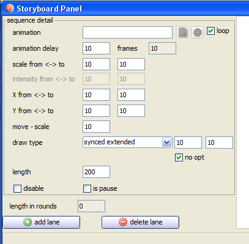

Storyboard 2" in vecci (located at the lower right - in the animation section).
Storyboard 2" in vecci (located at the lower right - in the animation section).The storyboard can be accessed by pressing the button " Storyboard 2" in vecci (located at the lower right - in the animation section).
With the storyboard you can generate vectrex source code and binary that displays a set of animations.
Each such animation can be placed, sized, moved, removed and illuminated in user defined sequences.
With some "energy" one might tell "stories" consisting of different animation (sequences).

The storyboard
(for a general description look at the help for storyboard 1) Although the storyboard 2 looks quite similar two the first - the general handling is a bit different.
For the storyboard 2 the "thought" behind each animation sequence are:
each sequence plays for a certain amount of time
changes are always done from "start settings" to "end settings"
Time
Each sequence plays for a fixed amount of time. The time can be given by the user in the field "length". (Which - now that I write it sounds stupid)
The "Length" field contains the number of display rounds (technical speaking) the animation sequence is played. The length of such a "display round" should be 1/50 of a second. (if you draw to much in the screen - the display round might be longer)
Following values as a "guide":
1 length: 1/50 of a second
5 length: 1/10 of a second
50 length: 1 second
500 length: 10 seconds ...
The length (time) of one lane is always the some of all animation sequences within the lane.
The length the selected lane is shown in the field "length in rounds" - thus you can easily compare the length of the complete lanes.
If you want to run all lanes "synchronized" (repeat with same start positions) - the length (time) of all lanes must be the same.
Changes
Following sequence settings are possible:
animation (no start end settings here, this is the animation done by vecci)
scale (of the vectorlist), FROM scale value - TO scale value
intensity (of the vectorlist), FROM intensity value - TO intensity value
x position (of the vectorlist), FROM x value - TO x value
y position (of the vectorlist), FROM y value - TO y value
The actual changes within the timerange are calculated by the storyboard.
There are three special checkboxes:
"loop" (next to the animation)
if checked the animation will loop during the complete display time of the sequence. If not checked, the animation will play once and than stay at the last animation image
"is pause"
if checked, the complete sequence does nothing but wait for the time to expire, even if an animation is set
"disable"
disables the animation sequence (is if it were deleted), great for experimenting with different sequences
All other settings that you did not find explained here are exactly the same as in storyboard 1.
NOTE!
Storyboard data for version 1 and version 2 are not compatible. You can not load one storyboard data into the other.
Both data files are saved to the same "storyboard" directory within the "xml" directory nonetheless. You have to keep track what files contain what data.